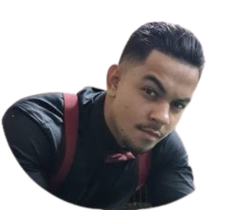

Quem é Silas Roberto?
 Olá e bem-vindo(a) à minha página de portfólio! Meu nome é Silas Roberto, tenho 24 anos e sou estudante de Análise e Desenvolvimento de Sistemas na UNINTER, aqui em Curitiba.
Sou apaixonado por tecnologia e estou sempre em busca de novas oportunidades para aprender e crescer na área de desenvolvimento.
Além do meu interesse por sistemas, sou cristão, gosto de academia e de corrida.
Desde muito jovem, tive a oportunidade de explorar o Brasil e além.
Nascido em Goiânia, Goiás, passei os primeiros anos da minha vida no Paraguai, de dois a quatro anos de idade.
Posteriormente, morei por uma boa parte da minha vida em São Paulo.
Durante esse período, tive o privilégio de conhecer diversas regiões do país. Embora seja difícil lembrar de todas as cidades visitadas, posso destacar os estados que explorei: Goiás, São Paulo, Minas Gerais, Mato Grosso, Mato Grosso do Sul, Espírito Santo, Rio de Janeiro, Piauí, Pará, Paraná, Ceará e Santa Catarina.
Espero que você encontre nesta página um pouco mais sobre minha jornada e habilidades.
Sinta-se à vontade para explorar e entrar em contato caso queira saber mais!